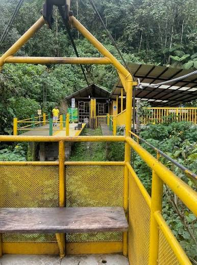
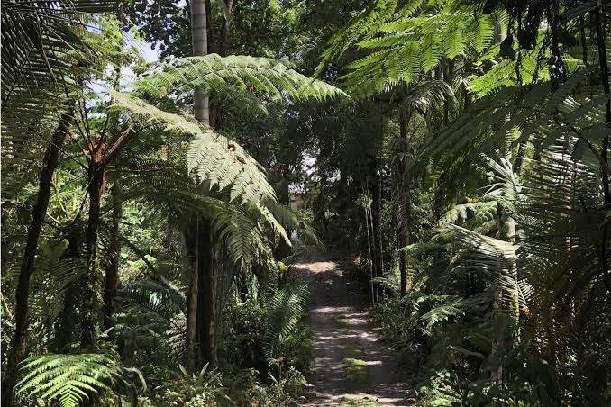
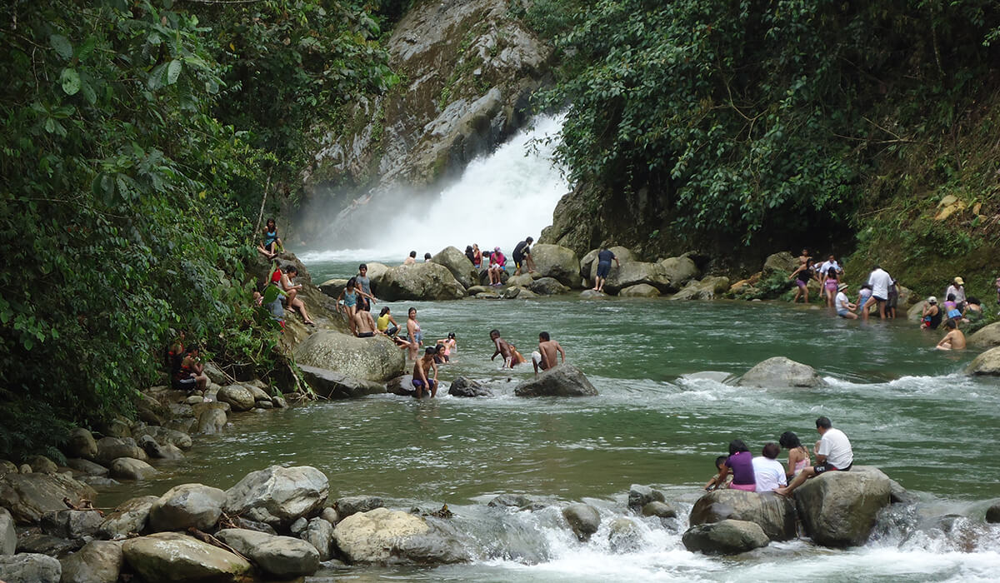

Bienvenidos a Mindo
Mindo es un encantador pueblo ubicado en el noroeste de Quito, Ecuador, a aproximadamente 90 minutos de la capital. Situado en el corazón del bosque nublado, es uno de los destinos ecoturísticos más importantes del país. Con una altitud de 1.250 metros sobre el nivel del mar, Mindo ofrece un clima agradable todo el año, exuberante vegetación, cascadas cristalinas y una biodiversidad extraordinaria que atrae a visitantes de todo el mundo.
Sus principales atractivos incluyen el avistamiento de aves, cascadas impresionantes, el mariposario, el bosque protector y actividades de aventura como la famosa tarabita. ¡Te invitamos a conocerlos!
Lugares Turísticos para Visitar

Mariposario de Mindo
Un espacio dedicado a la cría y exhibición de mariposas de diversas especies. Recorre los senderos y observa estas hermosas criaturas en plena libertad.
Ver más →
Cascadas de Nambillo
Un recorrido por varias cascadas impresionantes en medio de la selva. Caminata accesible que te lleva a disfrutar de aguas cristalinas y naturaleza pura.
Ver más →
Tarabita de Mindo
Un sistema de transporte colgante que cruza el valle a gran altura. Disfruta de vistas panorámicas espectaculares sobre el río y las montañas.
Ver más →
Bosque Protector Mindo-Nambillo
Reserva natural que protege más de 19.000 hectáreas de bosque nublado. Hogar de cientos de especies de aves, orquídeas y animales endémicos.
Ver más →
Jardín de Colibríes
Lugar único donde puedes observar y fotografiar decenas de especies de colibríes de muy cerca. Una experiencia inolvidable para los amantes de la naturaleza.
Ver más →
Río Mindo
El río que da nombre al pueblo, ideal para relajarse, nadar en sus pozas naturales y disfrutar de un día tranquilo en familia o con amigos.
Ver más →